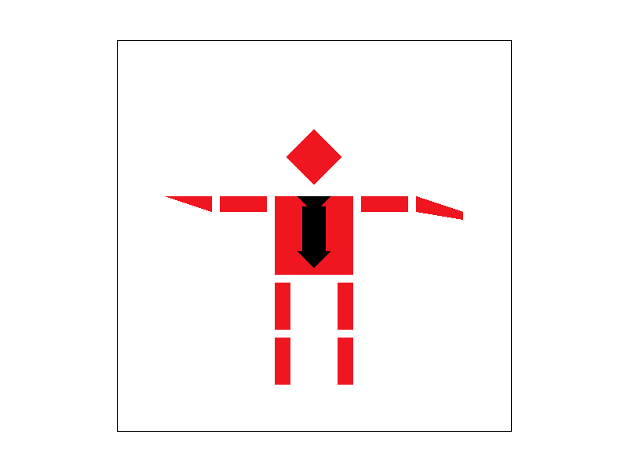
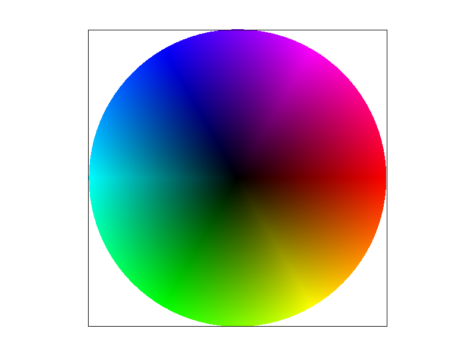
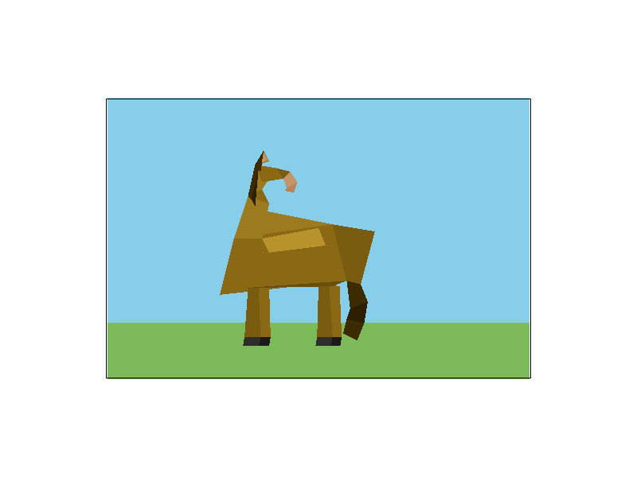

CS184/284A Spring 2025 Homework 1 Write-Up
Names: Randy Bui
Link to webpage:https://cal-cs184-student.github.io/hw-webpages-RandyBui2/hw1/index.html
Link to GitHub repository:https://github.com/cal-cs184-student/hw1-rasterizer-randy

Overview
In this assignment, we create a software rasterizer. through vector graphic descriptions (SVG), we create pixel images. We start from creating a simple triangle rasterizer, and using supersampling to deal with aliasing. We also worked on creating translations for our SVGs, the affine function for matrices and rotation matrix. Then, we work on how to make the images look more realistic, adding in barycentric coordinates which allows us to implement nearest pixel and bilinear texture mapping to smooth edges that are apparent in both naive and supersampled rasterization. We end on how to deal with minification with mipmapping by sampling at precomputed texture levels to reduce aliasing when we map large images viewed at small scales. Throughout the assignment we develop an intuition for the tradeoffs between quality and computational efficiency.Task 1: Drawing Single-Color Triangles
The rasterize triangle function works by first calculating the area of the triangle we want to draw. We do this because it will help us draw the triangle regardless of the winding. If the area is positive, we know its CCW and vice versa. Next, for every pixel inbetween our max x and y point, we will perform 3 line tests between each of the corners and our current pixel. In this case the line test is the evaluating if the area generated by each edge has the same winding as our area, if so we are in bound of the triangle. If if passes the line tests we can then place the pixel in the image. This algorithm is no worse than the bounding box method, because it is the bounding box method. We create a bounding box in the first step by checking the min/max coordinates, and then we evaluate every pixel inside that bounding box.
Task 2: Antialiasing by Supersampling
For each pixel in the triangle's bounding box, we test \(sqrt(sample\_rate)*sqrt(sample\_rate)\) subpixels distributed across the current pixel in a grid. If the subpixel passes the line tests, we write the subpixel's color into the sample buffer. The resolve_to_framebuffer then takes the sample_buffer and takes a straight average of each subpixel to downsample the image. We also did some clerical changes to support our anti-aliasing in set_sample_rate and clear_buffers. The reason why supersampling is useful is because the triangle edges have hard on/off coverage at the pixel level, meaning jaggie aliasing. Supersampling alleviates this by sampling the pixel at multiple places and taking averages so that pixels at fringes are blended, effectively smoothing out our edges, removing the jaggies|
|

|

|
|
Task 3: Transforms

Task 4: Barycentric coordinates
We follow the same sampling pipeline as in our rasterizing triangle, but instead of assigning a flat color to each subsample, we use Barycentric coordinates to determine the color at each subsample. We assign an alpha, beta and gamma, which are weights described by the relative distance between the subpixel and the vertices. These variables must sum to 1, so that we get a continuous color gradient.
Task 5: "Pixel sampling" for texture mapping
Pixel sampling is the process of determining what color a pixel should be by looking up a corresponding location in a texture map. Since the texture the screen are different resolutiomns and shape we need to map each pixel's position to a UV coordinate in the texture, then decide how to read the color at that location. In our code we implement this by computing barycentric coordinates for each subsample, and using them to interpolate the UV coordinates across the triangle. We then use a sampling algorithm to determine the texture color. In this assignment we employ two sampling algorithms Bilinear and nearest neighbor. Nearest neighbor takes the UV coordinates and scales it to the textures dimensions, rounding to nearest integer texel, and returning the color directly. This results in a faster rasterization, but can result in a blockier image Bilinear sampling takes four texels surrounding the UV coordinates and blends them together using linear interpolation. This fixes the blocky look by smoothing out the pixel with its neighbors. The difference between our two algorithms is the most noticable when we use the pixel viewer and magnify on segments of the image, we can observe that each individual pixel is more blocky using the nearest neighbor algorithm. This is also viewable when we view the image when mapped onto a curved surface, such as the map in example 1. nearest neighbor suffers here, creating visibily jagged transitions.|
|

|

|
|
Task 6: "Level Sampling" with mipmaps for texture mapping
Level sampling/mipmapping is used to deal with issues created when we map a large image onto a small plane, or minification, the principal issue being the sampling over the full large resolution results in aliasing, because we end up skipping large amounts of texels. Mipmapping addresses this by precomputing a series of progressively downsampled versions of the texture, so that when we can sample at the appropriate resolution when viewing at a smaller scale. In this assignment we implemented three levels of sampling, toggled by lsm. L_ZERO samples from the full resolution only, ignoring all the other computed levels. L_NEAREST computes the ideal level and rounds to the nerest integer mip level, and samples from that level. L_LINEAR computes the continuous level, samples from the two nearest integer levels, and then interpolating between them based on how close the continuous level is to each.

|

|

|

|
Task 7: Extra Credit
